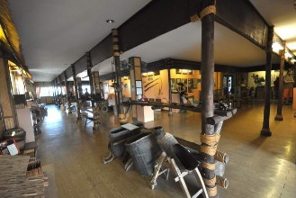

Chiang Rai (เมืองเชียงราย)
Capital da província de mesmo nome, com uma população de apenas 70.000 habitantes (dados de 2012).Fica há 860km de Bangcoc, 200km de Chiang Mai e 60km da fronteira com Mianmar, na cidade de Mae Sai.
É basicamente uma cidade de serviços para as províncias vizinhas, além de ser o principal centro comercial servindo a região do Triângulo Dourado (a fronteira Tailândia-Mianmar-Laos).
Um fato fez com que a cidade fosse notícia no mundo todo: o resgate do time de futebol de meninos presos dentro da caverna Tham Luang, que fica na região da cidade, em Junho de 2018.
Assim como Chiang Mai, é uma das cidades que melhor retratam a cativante simpatia e simplicidade do povo tailandês, sobretudo do interior.
As atrações de Chiang Rai

Tribos das montanhas
Vila Real Doi Tung
Wat Jet Yot
Museu Oub Kham
Wat Rong Khun (วัดร่องขุ่น)
Templo moderno em estilo único, todo branco, para representar a pureza de Buda.
Foi projetado e começou a ser construído pelo artista Chaloemchai Khositphiphat em 1998.
Para chegar ao templo, que segundo o artista que o criou, representa o céu, você precisa passar por uma ponte sobre várias mãos, representando pessoas tentando escapar do inferno.
Seu belíssimo ubosot é decorado com reluzentes pedaços prateados e espelhados.
Há grandes murais com pinturas de Buda em diferentes posições.
Um frontão é decorado com uma parte pontuda em forma de folha, no formato de Phya Naga, dragões e criaturas místicas totalmente feitas de estuque. Há também um viharn, salas menores ao longo do ubosot, um museu e um pavilhão de recepção.
No museu, as galerias exibem obras de Chaloemchai Khositphiphat, idealizador do templo.
Foi projetado e começou a ser construído pelo artista Chaloemchai Khositphiphat em 1998.
Para chegar ao templo, que segundo o artista que o criou, representa o céu, você precisa passar por uma ponte sobre várias mãos, representando pessoas tentando escapar do inferno.
Seu belíssimo ubosot é decorado com reluzentes pedaços prateados e espelhados.
Há grandes murais com pinturas de Buda em diferentes posições.
Um frontão é decorado com uma parte pontuda em forma de folha, no formato de Phya Naga, dragões e criaturas místicas totalmente feitas de estuque. Há também um viharn, salas menores ao longo do ubosot, um museu e um pavilhão de recepção.
No museu, as galerias exibem obras de Chaloemchai Khositphiphat, idealizador do templo.
Local: Ban Rong Khun, Tambon Pa O Don Chai, ao lado da Rodovia Phahonyothin no Km 816, há aproximadamente 13km da cidade. Há um ônibus
público saindo da estação de ônibus de Chiang Rai, plataforma 8, que custa ฿$ 20 e leva cerca de 30 minutos para chegar ao templo. Para
voltar, faça sinal para algum ônibus público ou songthaew na estação de polícia no lado esquerdo da rua que leva à autopista principal.
Horário: diariamente das 8:00 às 18:00.
Entrada: gratuita.
Site: www.watrongkhun.com
☎: +66 53 673-579.
Voltar à lista
Horário: diariamente das 8:00 às 18:00.
Entrada: gratuita.
Site: www.watrongkhun.com
☎: +66 53 673-579.
Vilas das Tribos da Montanha
Há opções de caminhadas até as trilhas, oferecidas por várias agências, como a Akha Hill House ou a
Thailand Hilltribe Holidays.
Ao escolher sua tour, leve em consideração que algumas agências só estão preocupadas com o lucro e não dão uma boa remuneração aos moradores das vila, não incentivam os turistas a comprar artesanato nos vilarejos (pois alguns levam à outros lugares, onde ganham comissão por vendas), e se a vila se desenvolve demais, ela é simplesmente riscada do roteiro turístico e as agências procuram por alguma outra mais "autêntica".
Uma boa dica de tour pelas tribos são a PDA Tour e a Mirror Art Group. Ambas são ONG's bem conhecidas na Tailândia e são muito mais justas com os moradores.
Ao escolher sua tour, leve em consideração que algumas agências só estão preocupadas com o lucro e não dão uma boa remuneração aos moradores das vila, não incentivam os turistas a comprar artesanato nos vilarejos (pois alguns levam à outros lugares, onde ganham comissão por vendas), e se a vila se desenvolve demais, ela é simplesmente riscada do roteiro turístico e as agências procuram por alguma outra mais "autêntica".
Uma boa dica de tour pelas tribos são a PDA Tour e a Mirror Art Group. Ambas são ONG's bem conhecidas na Tailândia e são muito mais justas com os moradores.

Centro de Língua e Cultura Chinesa Sirindhorn (Sirindhorn Chinese Language and Culture Centre / ศูนย์ภาษาวัฒนธรรมจีนสิรินธร)
Centro estabilizado através da cooperação da Mae Fa Luang University e do governo chinês.
Foi construído como um memorial em homenagem à princesa mãe (mãe do rei Rama IX), como um símbolo da amizade entre China e Tailândia, com um design que adere aos padrões chineses.
A construção levou 7 meses para ser concluída, à um custo de aproximadamente ฿$ 60 milhões.
A arquitetura imita o estilo chinês Suzhou de decoração de construções, e os ornamentos nos jardins foram feitos com materiais vindos da China.
Foi construído como um memorial em homenagem à princesa mãe (mãe do rei Rama IX), como um símbolo da amizade entre China e Tailândia, com um design que adere aos padrões chineses.
A construção levou 7 meses para ser concluída, à um custo de aproximadamente ฿$ 60 milhões.
A arquitetura imita o estilo chinês Suzhou de decoração de construções, e os ornamentos nos jardins foram feitos com materiais vindos da China.
Local: no terreno da Mae Fah Luang University.
Site: www.mfu.ac.th
☎: +66 53 917-093/7.
Voltar à lista
Site: www.mfu.ac.th
☎: +66 53 917-093/7.
Vila Real Doi Tung (Doi Tung Royal Villa / Mae Fah Luang Park & Botanic Garden)
Parque com 2 belas lagoas, um barco e vários pequenos lagos em estilo Shan.
A área é conhecida como Suíça da Tailândia, devido suas flores e montanhas no horizonte.
Uma estátua de bronze chamada Continuidade fica bem no centro dos jardins, e representa um grupo de crianças formando uma pirâmide humana enquanto uma delas sobe aos céus. É um tributo aos esforços da princesa Somdej Phra Srinagaridra Boromarajajonani em melhorar a vida do povo tailandês. Ela morou no local de 1987 à 1995.
Sua residência no parque serviu de base de onde ela supervisionou o projeto de reflorestamento da área, entre outras coisas.
A melhor época para se visitar a área do jardim botânico é de Novembro à Fevereiro.
A área é conhecida como Suíça da Tailândia, devido suas flores e montanhas no horizonte.
Uma estátua de bronze chamada Continuidade fica bem no centro dos jardins, e representa um grupo de crianças formando uma pirâmide humana enquanto uma delas sobe aos céus. É um tributo aos esforços da princesa Somdej Phra Srinagaridra Boromarajajonani em melhorar a vida do povo tailandês. Ela morou no local de 1987 à 1995.
Sua residência no parque serviu de base de onde ela supervisionou o projeto de reflorestamento da área, entre outras coisas.
A melhor época para se visitar a área do jardim botânico é de Novembro à Fevereiro.
Local: Doi Tung, Tambon Mae Fah Luang.
Horário: das 8:00 às 17:00.
Site: www.doitung.org/doitung/travel/garden.asp.
☎: +66 (0) 2252-7114 ou +66 (0) 53 767-015.
Voltar à lista
Horário: das 8:00 às 17:00.
Site: www.doitung.org/doitung/travel/garden.asp.
☎: +66 (0) 2252-7114 ou +66 (0) 53 767-015.
Triângulo Dourado
Ponto de divisa entre Tailândia, Laos e Mianmar.
Você pode chegar até ele com uma tour organizada por alguma agência de turismo local, por em média ฿$ 1.500.
Aqui você pode conseguir um visto para 1 dia em Mianmar, mas para isso precisa estar com seu passaporte, uma foto e pagar uma taxa de U$ 10.
Você pode chegar até ele com uma tour organizada por alguma agência de turismo local, por em média ฿$ 1.500.
Aqui você pode conseguir um visto para 1 dia em Mianmar, mas para isso precisa estar com seu passaporte, uma foto e pagar uma taxa de U$ 10.
Torre do Relógio (Clock Tower)
Torre que substitui uma anterior, construída em comemoração aos 80 anos do rei Rama IX.
Não é sempre que acontece, mas em alguns dias, por volta das 20:00, a torre tem um show de luzes estravagantes, que dura uns 20 minutos.
Não é sempre que acontece, mas em alguns dias, por volta das 20:00, a torre tem um show de luzes estravagantes, que dura uns 20 minutos.
Local: esquina das ruas Paholyothin e Jedyod.
Voltar à lista
Wat Phra Kaeo
Templo famoso por ter abrigado, no Século XIV, o Buda de Esmeralda, considerada a imagem mais sagrada do país, que agora está no templo de mesmo nome no
complexo do Grand Palace, em Bangcoc.
De acordo com a lenda, a estátua foi redescoberta em 1434, quando um raio atingiu o chedi no terreno, partindo-o e revelando o Buda dentro.
Após alguns anos a imagem foi levada para Lampang, Chiang Mai, Ayutthaya, Sri Lanka, Camboja, Vientiane (Laos) e finalmente para Bangcoc, em 1778.
O chedi em estilo Lanna, atrás do viharn, tem mais de 600 anos.
A área do templo é muito bonita e abriga um museu de 2 andares com uma réplica quase perfeita do Buda de Esmeralda, além de lagos com tartarugas gigantes, tartarugas normais e peixes.
De acordo com a lenda, a estátua foi redescoberta em 1434, quando um raio atingiu o chedi no terreno, partindo-o e revelando o Buda dentro.
Após alguns anos a imagem foi levada para Lampang, Chiang Mai, Ayutthaya, Sri Lanka, Camboja, Vientiane (Laos) e finalmente para Bangcoc, em 1778.
O chedi em estilo Lanna, atrás do viharn, tem mais de 600 anos.
A área do templo é muito bonita e abriga um museu de 2 andares com uma réplica quase perfeita do Buda de Esmeralda, além de lagos com tartarugas gigantes, tartarugas normais e peixes.
Local: rua Trairat.
Voltar à lista
Museu Bandaam (Bandaam Museum / Black House)
Museu criado pelo artista tailandês Thawan Duchanee, nascido em 1939 e que estudou artes na Holanda.
A área do museu inclui cerca de 40 casinhas pretas de madeira, vidro, concreto, tijolos ou terracota em vários estilos e desenhos. O grupo das casas abriga coleções de pinturas, esculturas, ossos, chifres e peles de animais, objetos de prata e ouro de diversas partes do mundo, etc.
Várias casas exibem arquitetura balinesa e birmanesa e datam do período Ayutthaya.
A área do museu inclui cerca de 40 casinhas pretas de madeira, vidro, concreto, tijolos ou terracota em vários estilos e desenhos. O grupo das casas abriga coleções de pinturas, esculturas, ossos, chifres e peles de animais, objetos de prata e ouro de diversas partes do mundo, etc.
Várias casas exibem arquitetura balinesa e birmanesa e datam do período Ayutthaya.
Local: 414 Moo 13, Tambon Nang Lae, Ban Dhu, há 10km ao norte da cidade. Você pode usar o transporte público. Há um ônibus saindo da
estação antiga em Chiang Rai, nas plataformas 5 e 6. Custa ฿$ 18 e o percurso leva uns 30 minutos. O ônibus te deixa na autopista e você
tem que caminhar mais 500m por uma rua lateral. Para voltar, vá até a autopista e faça sinal para um ônibus público ou songthaew pararem.
Para os songthaews, você não deve pagar mais de ฿$ 40.
Horário: das 9:00 às 12:00 e das 13:00 às 17:00.
Entrada: gratuita.
Site: www.thawan-duchanee.com.
☎: +66 53 705-834, +66 53 776-333, +66 81 673-1155.
Voltar à lista
Horário: das 9:00 às 12:00 e das 13:00 às 17:00.
Entrada: gratuita.
Site: www.thawan-duchanee.com.
☎: +66 53 705-834, +66 53 776-333, +66 81 673-1155.
Wat Rong Khun (วัดร่องขุ่น)
Pequeno templo que os locais acreditam abrigar o espírito da cidade (ming mueang), em um viharn decorado em
estilo Lanna.
Local: cruzamento das ruas Banphaprakan e Trairat
Voltar à lista
Wat Jet Yot
Templo construído em 1844 por um monge chamado Brakrubakuntha Kunthawungso.
Tornou-se um templo real de 3ª classe em 1978.
Atrás do viharn há um chedi com 7 pontas, que dão nome ao templo.
Tornou-se um templo real de 3ª classe em 1978.
Atrás do viharn há um chedi com 7 pontas, que dão nome ao templo.
Local: rua Jet Yot Rd.
Voltar à lista
Wat Phra Singh (วัดพระสิงห์)
Templo construído em 1385 pelo rei Mahaphrom, com um viharn em estilo Lanna, que já abrigou a importante imagem Phra Phuttasihing,
que acredita-se que tenha sido criada no ano de 157 no Sri Lanka e que tenha chego na Tailândia durante o período Sukhothai (1238-1438).
Agora, o templo conta apenas com uma uma réplica desta imagem, que está no templo de mesmo nome em Chiang Mai.
Destaque para o ubosot em estilo Lanna e as portas de madeira com esculturas de artesãos contemporâneos de Chiang Rai.
Agora, o templo conta apenas com uma uma réplica desta imagem, que está no templo de mesmo nome em Chiang Mai.
Destaque para o ubosot em estilo Lanna e as portas de madeira com esculturas de artesãos contemporâneos de Chiang Rai.
Wat Phra That Doi Chom Thong (วัดพระธาตุดอยจอมทอง)
Templo no alto de um pequeno morro à noroeste da cidade, que contém o que acredita-se que seja a mais antiga relíquia sagrada de Chiang Rai, datando de antes
mesmo do rei Mengrai criar a cidade.
O chedi dourado, medindo cerca de 14m foi construído em estilo birmanês e Lanna. De acordo com a Crônica de Yonok, o chedi foi construído em 940 durante o reinado de Phraya Ruen Kaew, príncipe de Chiang Rai, para abrigar relíquias de Buda, mas é mais provável que o chedi seja do Século XIV.
Foi nesse local que o rei Mengrai avistou a posição estratégica na qual estabeleceu a cidade.
O chedi dourado, medindo cerca de 14m foi construído em estilo birmanês e Lanna. De acordo com a Crônica de Yonok, o chedi foi construído em 940 durante o reinado de Phraya Ruen Kaew, príncipe de Chiang Rai, para abrigar relíquias de Buda, mas é mais provável que o chedi seja do Século XIV.
Foi nesse local que o rei Mengrai avistou a posição estratégica na qual estabeleceu a cidade.
☎: +66 (0) 53 716-055.
Voltar à lista
Museu Oub Kham (พิพิธภัณฑ์อูปคำ)
Museu particular de Khun Julasak Suriyachai, com uma coleção abrangendo objetos usados em cortes reais como as de Lanna, Khum Chao Phare e Khum Chao Chiang Mai.
Algumas partes são do nordeste de Mianmar, sudoeste da China e do Vietnã, com cerca de 500 à 1000 anos.
Os visitantes podem admirar tecidos de 120 anos, camisas de seda douradas Sin Mai Kham de Mandalay, o trono dourado, as roupas douradas do rei e ornamentos de prata.
A tijela dourada, usada pelos reis, é uma obra de arte!
Algumas partes são do nordeste de Mianmar, sudoeste da China e do Vietnã, com cerca de 500 à 1000 anos.
Os visitantes podem admirar tecidos de 120 anos, camisas de seda douradas Sin Mai Kham de Mandalay, o trono dourado, as roupas douradas do rei e ornamentos de prata.
A tijela dourada, usada pelos reis, é uma obra de arte!
Local: 81/1 Na Khai Rd, Tambon Rob Wiang, próximo ao Den Ha Market, há 3km ao sul do centro.
Horário: diariamente, das 9:00 às 17:00.
Entrada: ฿$ 300 (adultos) ou ฿$ 100 (crianças).
Site: www.oubkhammuseum.com.
☎: +66 53 713-349.
Voltar à lista
Horário: diariamente, das 9:00 às 17:00.
Entrada: ฿$ 300 (adultos) ou ฿$ 100 (crianças).
Site: www.oubkhammuseum.com.
☎: +66 53 713-349.
Vistas da Cidade
As vistas da cidade desde a City Buffalo Horn Hill (Colina do Chifre do Búfalo da Cidade) são explendorosas. Para chegar, pegue a
antiga rodovia para Chiang Mai (Thanon Ratchayotha) e após alguns kms, um morro pode ser visto à esquerda. Vire à esquerda na Nongpoung Soi 3 e siga em direção ao
morro com um templo no alto.
Outras vistas impressionantes podem ser obtidas do alto do Doi Kong Kao (Rice Box Hill ou Colina da Caixa de Arroz), há 4km à oeste da cidade.
Há um caminho íngreme no lado oeste, mas que vale a pena. No alto do morro há uma imagem de Buda em pé, com 3m de altura.
O alto da encosta de calcário vertical de 90m no Boomerang Park oferece uma vista da cidade e kms dos vales e do rio.
Outras vistas impressionantes podem ser obtidas do alto do Doi Kong Kao (Rice Box Hill ou Colina da Caixa de Arroz), há 4km à oeste da cidade.
Há um caminho íngreme no lado oeste, mas que vale a pena. No alto do morro há uma imagem de Buda em pé, com 3m de altura.
O alto da encosta de calcário vertical de 90m no Boomerang Park oferece uma vista da cidade e kms dos vales e do rio.
Museu e Centro Educacional das Tribos das Montanhas (Hill Tribe Museum and Education Center)
Museu fundado pelo famoso filantropo Meechai, da PDA (Population and Community Development Association, ou Associação do Desenvolvimento da População e das
Comunidades).
O museu inclui um breve resumo, com trajes típicos das 6 maiores tribos, além de seus estilos de casas, ferramentas, utensílios, pesca e agricultura.
O centro organiza tours para as tribos, só que aqui o dinheiro é usado para empregar e ajudar os moradores das vilas, e não os operadores das tours, como na maioria das agências.
Há um restaurante da rede Cabbages & Condoms (de Bangcoc) no piso térreo, que destina seu lucro à projetos de planejamento familiar e educação sexual na Tailândia.
A entrada dá direito a uma bebida nesse restaurante.
O museu inclui um breve resumo, com trajes típicos das 6 maiores tribos, além de seus estilos de casas, ferramentas, utensílios, pesca e agricultura.
O centro organiza tours para as tribos, só que aqui o dinheiro é usado para empregar e ajudar os moradores das vilas, e não os operadores das tours, como na maioria das agências.
Há um restaurante da rede Cabbages & Condoms (de Bangcoc) no piso térreo, que destina seu lucro à projetos de planejamento familiar e educação sexual na Tailândia.
A entrada dá direito a uma bebida nesse restaurante.

Local: 620/25 Tanalai Rd.
Horário: das 9:00 às 18:00.
Entrada: ฿$ 50.
Site: www.pda.or.th/chiangrai/.
☎: +66 53 740-088.
Voltar à lista
Horário: das 9:00 às 18:00.
Entrada: ฿$ 50.
Site: www.pda.or.th/chiangrai/.
☎: +66 53 740-088.
Memorial ao Rei Mengrai (King Mengrai Memorial / อนุสาวรีย์พ่อขุนเม็งรายมหาราช)
Estátua de bronze em homenagem ao rei Mengrai, governante de Nakhon Hiran Ngoen Yang (uma cidade antiga às margens do rio Mae Khong perto de Chiang Saen), antes de
Chiang Rai ser estabilizada como um centro administrativo, em 1262.
Ele consolidou seu poder ao juntar a cidade ao norte e fundar o Reino Lanna em 1296, com Chiang Mai como capital.
Ele consolidou seu poder ao juntar a cidade ao norte e fundar o Reino Lanna em 1296, com Chiang Mai como capital.
Local: na área da cidade, no começo da Highway 110, que leva à Mae Chan, Chiang Saen e Mae Sai.
Voltar à lista
Ku Phra Chao Mengrai (กู่พระเจ้าเม็งราย)
Chedi construído pelo rei Chaisongkram para armazenar os restos mortais de seu pai, o rei Mengrai.
Wat Klong Wiang
Templo com um exuberante estilo Lanna, construído em 1432.
Destaque para as coloridas estátuas de guardiões e para os elefantes nos fundos.
Destaque para as coloridas estátuas de guardiões e para os elefantes nos fundos.
Parque Florestal Namtok Khun Kon (Namtok Khun Kon Forest Park / วนอุทยานน้ำตกขุนกรณ์)
Parque florestal que tem como destaque a maior e mais bela cachoeira da província, com 70m de altura.
A área abrange vegetação tropical e bambus.
O caminho até o topo desde a área de estacionamento é relativamente íngreme, e leva uns 40 minutos, então se não estiver em boas condições físicas, melhor não tentar.
A área abrange vegetação tropical e bambus.
O caminho até o topo desde a área de estacionamento é relativamente íngreme, e leva uns 40 minutos, então se não estiver em boas condições físicas, melhor não tentar.
Local: pegue a Highway 1211 na cidade. Após 18 kms, vire à direita e siga mais 12kms. Ou siga pela Highway 1 (Chiang Rai-Phayao) por
uns 15kms onde há uma rua à direita, entre nela e siga mais 17kms até chegar ao parque.
Voltar à lista
Águas Termais (Hot Springs)
Chiang Rai possui várias fontes de águas termais, com jatos e borbulhas.
Você pode comprar uma cesta e cozinhar ovos nessas águas.
Uma das mais populares é a Pong Num Ron, onde se encontram várias barraquinhas de souvenirs, comida, roupas, etc.
A maioria dos turistas pega uma day trip que inclui uma passagem por essas águas.
Você pode comprar uma cesta e cozinhar ovos nessas águas.
Uma das mais populares é a Pong Num Ron, onde se encontram várias barraquinhas de souvenirs, comida, roupas, etc.
A maioria dos turistas pega uma day trip que inclui uma passagem por essas águas.